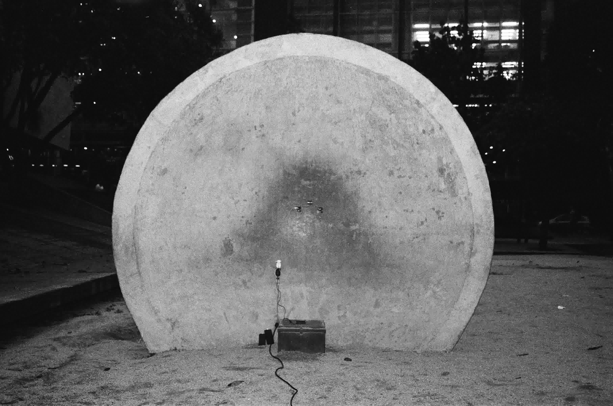
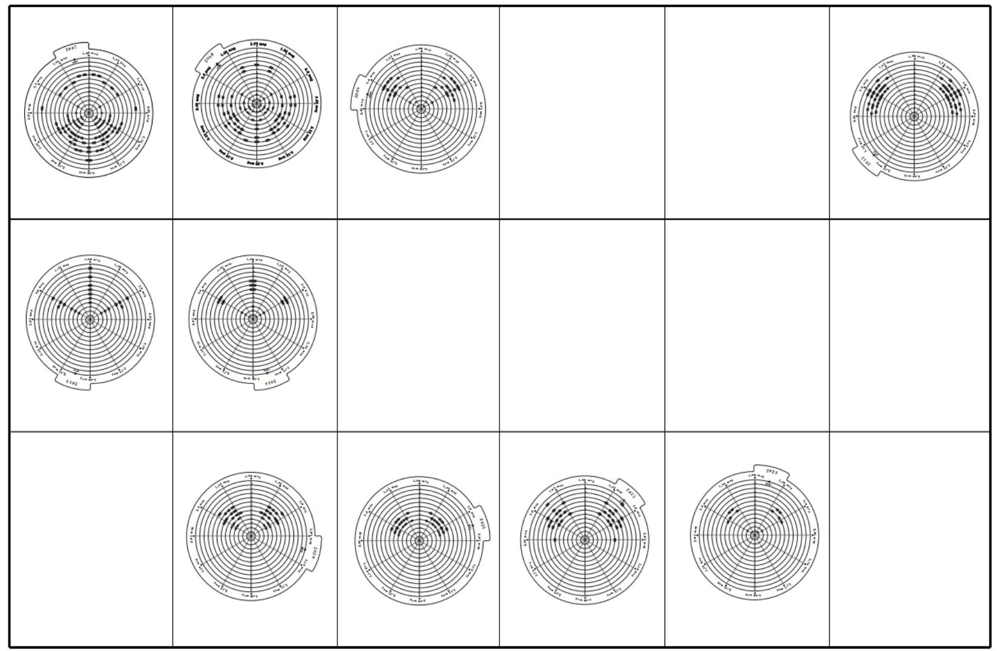
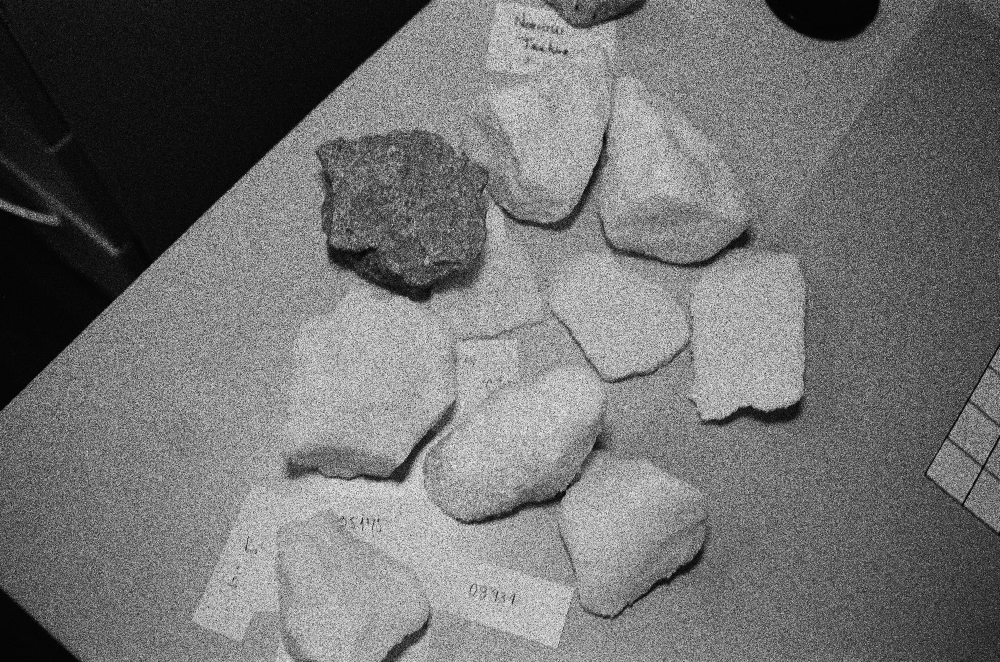

ARCHIVO DE OBRAS · WORKS ARCHIVE
008 registrosrecords · 2020–2026
EEK-008 · 2026

Un problema de escalaA Problem of Scale
EEK-007 · 2024 · Medellín

En la Tierra, silencioOn Earth, Silence
EEK-006 · 2024 · Bogotá

Los años que no vimos las estrellasThe Years We Didn't See the Stars
EEK-005 · 2022 · Bogotá

Eclipse lunar + Diego SerranoLunar Eclipse + Diego Serrano
EEK-004 · 2022 · Toronto

Simulación Rocas LunaresLunar Rocks Simulation
EEK-003 · 2020 · Bogotá

Fanzine
EEK-002 · 2020 · Bogotá

Cinco veces la misma piedraFive Times the Same Stone
EEK-001 · 2020 · Bogotá

Eclipse penumbral lunarPenumbral Lunar Eclipse